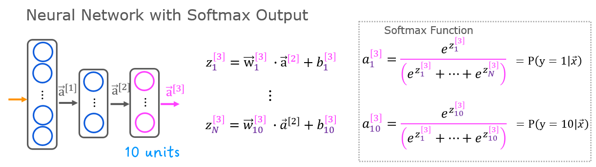
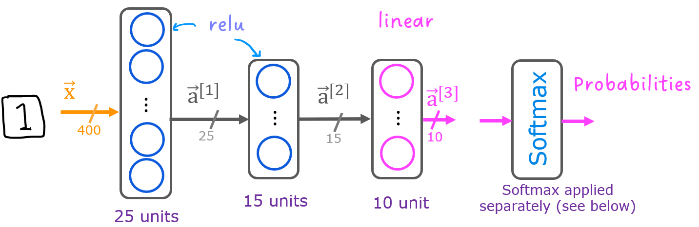

Practice Lab: Neural Networks for Handwritten Digit Recognition, Multiclass
In this exercise, you will use a neural network to recognize the hand-written digits 0-9.
Outline
1 - Packages
2 - ReLU Activation
3 - Softmax Function
Exercise 1
4 - Neural Networks
4.1 Problem Statement
4.2 Dataset
4.3 Model representation
4.4 Tensorflow Model Implementation
4.5 Softmax placement
Exercise 2
## 1 - Packages
First, let’s run the cell below to import all the packages that you will need during this assignment. - numpy is the fundamental package for scientific computing with Python. - matplotlib is a popular library to plot graphs in Python. - tensorflow a popular platform for machine learning.
[1]:
import numpy as np
import tensorflow as tf
from tensorflow.keras.models import Sequential
from tensorflow.keras.layers import Dense
from tensorflow.keras.activations import linear, relu, sigmoid
%matplotlib widget
import matplotlib.pyplot as plt
plt.style.use('./deeplearning.mplstyle')
import logging
logging.getLogger("tensorflow").setLevel(logging.ERROR)
tf.autograph.set_verbosity(0)
from public_tests import *
from autils import *
from lab_utils_softmax import plt_softmax
np.set_printoptions(precision=2)
## 2 - ReLU Activation This week, a new activation was introduced, the Rectified Linear Unit (ReLU).
[2]:
plt_act_trio()
 The example from the lecture on the right shows an application of the ReLU. In this example, the derived “awareness” feature is not binary but has a continuous range of values. The sigmoid is best for on/off or binary situations. The ReLU provides a continuous linear relationship. Additionally it has an ‘off’ range where the output is zero.
The example from the lecture on the right shows an application of the ReLU. In this example, the derived “awareness” feature is not binary but has a continuous range of values. The sigmoid is best for on/off or binary situations. The ReLU provides a continuous linear relationship. Additionally it has an ‘off’ range where the output is zero.## 3 - Softmax Function A multiclass neural network generates N outputs. One output is selected as the predicted answer. In the output layer, a vector \(\mathbf{z}\) is generated by a linear function which is fed into a softmax function. The softmax function converts \(\mathbf{z}\) into a probability distribution as described below. After applying softmax, each output will be between 0 and 1 and the outputs will sum to 1. They can be interpreted as probabilities. The larger inputs to the softmax will correspond to larger output probabilities.

The softmax function can be written:
Where \(z = \mathbf{w} \cdot \mathbf{x} + b\) and N is the number of feature/categories in the output layer.
### Exercise 1 Let’s create a NumPy implementation:
[7]:
# UNQ_C1
# GRADED CELL: my_softmax
def my_softmax(z):
""" Softmax converts a vector of values to a probability distribution.
Args:
z (ndarray (N,)) : input data, N features
Returns:
a (ndarray (N,)) : softmax of z
"""
### START CODE HERE ###
ez = np.exp(z)
a = ez/np.sum(ez)
### END CODE HERE ###
return a
[8]:
z = np.array([1., 2., 3., 4.])
a = my_softmax(z)
atf = tf.nn.softmax(z)
print(f"my_softmax(z): {a}")
print(f"tensorflow softmax(z): {atf}")
# BEGIN UNIT TEST
test_my_softmax(my_softmax)
# END UNIT TEST
my_softmax(z): [0.03 0.09 0.24 0.64]
tensorflow softmax(z): [0.03 0.09 0.24 0.64]
All tests passed.
Click for hints One implementation uses for loop to first build the denominator and then a second loop to calculate each output.
def my_softmax(z):
N = len(z)
a = # initialize a to zeros
ez_sum = # initialize sum to zero
for k in range(N): # loop over number of outputs
ez_sum += # sum exp(z[k]) to build the shared denominator
for j in range(N): # loop over number of outputs again
a[j] = # divide each the exp of each output by the denominator
return(a)
Click for code
def my_softmax(z):
N = len(z)
a = np.zeros(N)
ez_sum = 0
for k in range(N):
ez_sum += np.exp(z[k])
for j in range(N):
a[j] = np.exp(z[j])/ez_sum
return(a)
Or, a vector implementation:
def my_softmax(z):
ez = np.exp(z)
a = ez/np.sum(ez)
return(a)
Below, vary the values of the z inputs. Note in particular how the exponential in the numerator magnifies small differences in the values. Note as well that the output values sum to one.
[9]:
plt.close("all")
plt_softmax(my_softmax)
## 4 - Neural Networks
In last weeks assignment, you implemented a neural network to do binary classification. This week you will extend that to multiclass classification. This will utilize the softmax activation.
### 4.1 Problem Statement
In this exercise, you will use a neural network to recognize ten handwritten digits, 0-9. This is a multiclass classification task where one of n choices is selected. Automated handwritten digit recognition is widely used today - from recognizing zip codes (postal codes) on mail envelopes to recognizing amounts written on bank checks.
### 4.2 Dataset
You will start by loading the dataset for this task. - The load_data() function shown below loads the data into variables X and y
The data set contains 5000 training examples of handwritten digits \(^1\).
Each training example is a 20-pixel x 20-pixel grayscale image of the digit.
Each pixel is represented by a floating-point number indicating the grayscale intensity at that location.
The 20 by 20 grid of pixels is “unrolled” into a 400-dimensional vector.
Each training examples becomes a single row in our data matrix
X.This gives us a 5000 x 400 matrix
Xwhere every row is a training example of a handwritten digit image.
The second part of the training set is a 5000 x 1 dimensional vector
ythat contains labels for the training sety = 0if the image is of the digit0,y = 4if the image is of the digit4and so on.
\(^1\) This is a subset of the MNIST handwritten digit dataset (http://yann.lecun.com/exdb/mnist/)
[10]:
# load dataset
X, y = load_data()
4.2.1 View the variables
The code below prints the first element in the variables X and y.
[ ]:
print ('The first element of X is: ', X[0])
[11]:
print ('The first element of y is: ', y[0,0])
print ('The last element of y is: ', y[-1,0])
The first element of y is: 0
The last element of y is: 9
4.2.2 Check the dimensions of your variables
Another way to get familiar with your data is to view its dimensions. Please print the shape of X and y and see how many training examples you have in your dataset.
[12]:
print ('The shape of X is: ' + str(X.shape))
print ('The shape of y is: ' + str(y.shape))
The shape of X is: (5000, 400)
The shape of y is: (5000, 1)
4.2.3 Visualizing the Data
You will begin by visualizing a subset of the training set. - In the cell below, the code randomly selects 64 rows from X, maps each row back to a 20 pixel by 20 pixel grayscale image and displays the images together. - The label for each image is displayed above the image
[13]:
import warnings
warnings.simplefilter(action='ignore', category=FutureWarning)
# You do not need to modify anything in this cell
m, n = X.shape
fig, axes = plt.subplots(8,8, figsize=(5,5))
fig.tight_layout(pad=0.13,rect=[0, 0.03, 1, 0.91]) #[left, bottom, right, top]
#fig.tight_layout(pad=0.5)
widgvis(fig)
for i,ax in enumerate(axes.flat):
# Select random indices
random_index = np.random.randint(m)
# Select rows corresponding to the random indices and
# reshape the image
X_random_reshaped = X[random_index].reshape((20,20)).T
# Display the image
ax.imshow(X_random_reshaped, cmap='gray')
# Display the label above the image
ax.set_title(y[random_index,0])
ax.set_axis_off()
fig.suptitle("Label, image", fontsize=14)
### 4.3 Model representation
The neural network you will use in this assignment is shown in the figure below. - This has two dense layers with ReLU activations followed by an output layer with a linear activation. - Recall that our inputs are pixel values of digit images. - Since the images are of size \(20\times20\), this gives us \(400\) inputs

The parameters have dimensions that are sized for a neural network with \(25\) units in layer 1, \(15\) units in layer 2 and \(10\) output units in layer 3, one for each digit.
Recall that the dimensions of these parameters is determined as follows:
If network has \(s_{in}\) units in a layer and \(s_{out}\) units in the next layer, then
\(W\) will be of dimension \(s_{in} \times s_{out}\).
\(b\) will be a vector with \(s_{out}\) elements
Therefore, the shapes of
W, andb, arelayer1: The shape of
W1is (400, 25) and the shape ofb1is (25,)layer2: The shape of
W2is (25, 15) and the shape ofb2is: (15,)layer3: The shape of
W3is (15, 10) and the shape ofb3is: (10,) >Note: The bias vectorbcould be represented as a 1-D (n,) or 2-D (n,1) array. Tensorflow utilizes a 1-D representation and this lab will maintain that convention:
### 4.4 Tensorflow Model Implementation
model.fit statement below. >Note: It is also possible to add an input layer that specifies the input dimension of the first layer. For example:tf.keras.Input(shape=(400,)), #specify input shapemodel.compile statement will indicate this by including from_logits=True. loss=tf.keras.losses.SparseCategoricalCrossentropy(from_logits=True)Using the model: * The outputs are not probabilities. If output probabilities are desired, apply a softmax function.
### Exercise 2
Below, using Keras Sequential model and Dense Layer with a ReLU activation to construct the three layer network described above.
[16]:
# UNQ_C2
# GRADED CELL: Sequential model
tf.random.set_seed(1234) # for consistent results
model = Sequential(
[
### START CODE HERE ###
tf.keras.layers.InputLayer((400,)),
tf.keras.layers.Dense(25, activation="relu", name="L1"),
tf.keras.layers.Dense(15, activation="relu", name="L2"),
tf.keras.layers.Dense(10, activation="linear", name="L3")
### END CODE HERE ###
], name = "my_model"
)
model.compile(loss=tf.keras.losses.SparseCategoricalCrossentropy(from_logits=True))
[17]:
model.summary()
Model: "my_model"
_________________________________________________________________
Layer (type) Output Shape Param #
=================================================================
L1 (Dense) (None, 25) 10025
L2 (Dense) (None, 15) 390
L3 (Dense) (None, 10) 160
=================================================================
Total params: 10,575
Trainable params: 10,575
Non-trainable params: 0
_________________________________________________________________
Expected Output (Click to expand) The model.summary() function displays a useful summary of the model. Note, the names of the layers may vary as they are auto-generated unless the name is specified.
Model: "my_model"
_________________________________________________________________
Layer (type) Output Shape Param #
=================================================================
L1 (Dense) (None, 25) 10025
_________________________________________________________________
L2 (Dense) (None, 15) 390
_________________________________________________________________
L3 (Dense) (None, 10) 160
=================================================================
Total params: 10,575
Trainable params: 10,575
Non-trainable params: 0
_________________________________________________________________
Click for hints
tf.random.set_seed(1234)
model = Sequential(
[
### START CODE HERE ###
tf.keras.Input(shape=(400,)), # @REPLACE
Dense(25, activation='relu', name = "L1"), # @REPLACE
Dense(15, activation='relu', name = "L2"), # @REPLACE
Dense(10, activation='linear', name = "L3"), # @REPLACE
### END CODE HERE ###
], name = "my_model"
)
[18]:
# BEGIN UNIT TEST
test_model(model, 10, 400)
# END UNIT TEST
All tests passed!
The parameter counts shown in the summary correspond to the number of elements in the weight and bias arrays as shown below.
Let’s further examine the weights to verify that tensorflow produced the same dimensions as we calculated above.
[19]:
[layer1, layer2, layer3] = model.layers
[20]:
#### Examine Weights shapes
W1,b1 = layer1.get_weights()
W2,b2 = layer2.get_weights()
W3,b3 = layer3.get_weights()
print(f"W1 shape = {W1.shape}, b1 shape = {b1.shape}")
print(f"W2 shape = {W2.shape}, b2 shape = {b2.shape}")
print(f"W3 shape = {W3.shape}, b3 shape = {b3.shape}")
W1 shape = (400, 25), b1 shape = (25,)
W2 shape = (25, 15), b2 shape = (15,)
W3 shape = (15, 10), b3 shape = (10,)
Expected Output
W1 shape = (400, 25), b1 shape = (25,)
W2 shape = (25, 15), b2 shape = (15,)
W3 shape = (15, 10), b3 shape = (10,)
The following code: * defines a loss function, SparseCategoricalCrossentropy and indicates the softmax should be included with the loss calculation by adding from_logits=True) * defines an optimizer. A popular choice is Adaptive Moment (Adam) which was described in lecture.
[21]:
model.compile(
loss=tf.keras.losses.SparseCategoricalCrossentropy(from_logits=True),
optimizer=tf.keras.optimizers.Adam(learning_rate=0.001),
)
history = model.fit(
X,y,
epochs=40
)
Epoch 1/40
157/157 [==============================] - 1s 2ms/step - loss: 1.7094
Epoch 2/40
157/157 [==============================] - 0s 2ms/step - loss: 0.7480
Epoch 3/40
157/157 [==============================] - 0s 2ms/step - loss: 0.4428
Epoch 4/40
157/157 [==============================] - 0s 2ms/step - loss: 0.3463
Epoch 5/40
157/157 [==============================] - 0s 2ms/step - loss: 0.2977
Epoch 6/40
157/157 [==============================] - 0s 2ms/step - loss: 0.2630
Epoch 7/40
157/157 [==============================] - 0s 2ms/step - loss: 0.2361
Epoch 8/40
157/157 [==============================] - 0s 2ms/step - loss: 0.2131
Epoch 9/40
157/157 [==============================] - 0s 2ms/step - loss: 0.2004
Epoch 10/40
157/157 [==============================] - 0s 2ms/step - loss: 0.1805
Epoch 11/40
157/157 [==============================] - 0s 2ms/step - loss: 0.1692
Epoch 12/40
157/157 [==============================] - 0s 2ms/step - loss: 0.1580
Epoch 13/40
157/157 [==============================] - 0s 2ms/step - loss: 0.1507
Epoch 14/40
157/157 [==============================] - 0s 2ms/step - loss: 0.1396
Epoch 15/40
157/157 [==============================] - 0s 2ms/step - loss: 0.1289
Epoch 16/40
157/157 [==============================] - 0s 2ms/step - loss: 0.1255
Epoch 17/40
157/157 [==============================] - 0s 2ms/step - loss: 0.1154
Epoch 18/40
157/157 [==============================] - 0s 2ms/step - loss: 0.1102
Epoch 19/40
157/157 [==============================] - 0s 2ms/step - loss: 0.1016
Epoch 20/40
157/157 [==============================] - 0s 2ms/step - loss: 0.0970
Epoch 21/40
157/157 [==============================] - 0s 2ms/step - loss: 0.0926
Epoch 22/40
157/157 [==============================] - 0s 2ms/step - loss: 0.0891
Epoch 23/40
157/157 [==============================] - 0s 2ms/step - loss: 0.0828
Epoch 24/40
157/157 [==============================] - 0s 2ms/step - loss: 0.0785
Epoch 25/40
157/157 [==============================] - 0s 2ms/step - loss: 0.0755
Epoch 26/40
157/157 [==============================] - 0s 2ms/step - loss: 0.0713
Epoch 27/40
157/157 [==============================] - 0s 2ms/step - loss: 0.0701
Epoch 28/40
157/157 [==============================] - 0s 2ms/step - loss: 0.0617
Epoch 29/40
157/157 [==============================] - 0s 2ms/step - loss: 0.0578
Epoch 30/40
157/157 [==============================] - 0s 2ms/step - loss: 0.0550
Epoch 31/40
157/157 [==============================] - 0s 2ms/step - loss: 0.0511
Epoch 32/40
157/157 [==============================] - 0s 2ms/step - loss: 0.0499
Epoch 33/40
157/157 [==============================] - 0s 2ms/step - loss: 0.0462
Epoch 34/40
157/157 [==============================] - 0s 2ms/step - loss: 0.0437
Epoch 35/40
157/157 [==============================] - 0s 2ms/step - loss: 0.0422
Epoch 36/40
157/157 [==============================] - 0s 2ms/step - loss: 0.0396
Epoch 37/40
157/157 [==============================] - 0s 2ms/step - loss: 0.0366
Epoch 38/40
157/157 [==============================] - 0s 2ms/step - loss: 0.0344
Epoch 39/40
157/157 [==============================] - 0s 2ms/step - loss: 0.0312
Epoch 40/40
157/157 [==============================] - 0s 2ms/step - loss: 0.0294
Epochs and batches
In the compile statement above, the number of epochs was set to 100. This specifies that the entire data set should be applied during training 100 times. During training, you see output describing the progress of training that looks like this:
Epoch 1/100
157/157 [==============================] - 0s 1ms/step - loss: 2.2770
The first line, Epoch 1/100, describes which epoch the model is currently running. For efficiency, the training data set is broken into ‘batches’. The default size of a batch in Tensorflow is 32. There are 5000 examples in our data set or roughly 157 batches. The notation on the 2nd line 157/157 [==== is describing which batch has been executed.
Loss (cost)
In course 1, we learned to track the progress of gradient descent by monitoring the cost. Ideally, the cost will decrease as the number of iterations of the algorithm increases. Tensorflow refers to the cost as loss. Above, you saw the loss displayed each epoch as model.fit was executing. The .fit method returns a variety of metrics including the loss. This is captured in the history variable above. This can be used to
examine the loss in a plot as shown below.
[22]:
plot_loss_tf(history)
Prediction
To make a prediction, use Keras predict. Below, X[1015] contains an image of a two.
[23]:
image_of_two = X[1015]
display_digit(image_of_two)
prediction = model.predict(image_of_two.reshape(1,400)) # prediction
print(f" predicting a Two: \n{prediction}")
print(f" Largest Prediction index: {np.argmax(prediction)}")
predicting a Two:
[[ -7.99 -2.23 0.77 -2.41 -11.66 -11.15 -9.53 -3.36 -4.42 -7.17]]
Largest Prediction index: 2
The largest output is prediction[2], indicating the predicted digit is a ‘2’. If the problem only requires a selection, that is sufficient. Use NumPy argmax to select it. If the problem requires a probability, a softmax is required:
[24]:
prediction_p = tf.nn.softmax(prediction)
print(f" predicting a Two. Probability vector: \n{prediction_p}")
print(f"Total of predictions: {np.sum(prediction_p):0.3f}")
predicting a Two. Probability vector:
[[1.42e-04 4.49e-02 8.98e-01 3.76e-02 3.61e-06 5.97e-06 3.03e-05 1.44e-02
5.03e-03 3.22e-04]]
Total of predictions: 1.000
To return an integer representing the predicted target, you want the index of the largest probability. This is accomplished with the Numpy argmax function.
[25]:
yhat = np.argmax(prediction_p)
print(f"np.argmax(prediction_p): {yhat}")
np.argmax(prediction_p): 2
Let’s compare the predictions vs the labels for a random sample of 64 digits. This takes a moment to run.
[26]:
import warnings
warnings.simplefilter(action='ignore', category=FutureWarning)
# You do not need to modify anything in this cell
m, n = X.shape
fig, axes = plt.subplots(8,8, figsize=(5,5))
fig.tight_layout(pad=0.13,rect=[0, 0.03, 1, 0.91]) #[left, bottom, right, top]
widgvis(fig)
for i,ax in enumerate(axes.flat):
# Select random indices
random_index = np.random.randint(m)
# Select rows corresponding to the random indices and
# reshape the image
X_random_reshaped = X[random_index].reshape((20,20)).T
# Display the image
ax.imshow(X_random_reshaped, cmap='gray')
# Predict using the Neural Network
prediction = model.predict(X[random_index].reshape(1,400))
prediction_p = tf.nn.softmax(prediction)
yhat = np.argmax(prediction_p)
# Display the label above the image
ax.set_title(f"{y[random_index,0]},{yhat}",fontsize=10)
ax.set_axis_off()
fig.suptitle("Label, yhat", fontsize=14)
plt.show()
Let’s look at some of the errors. >Note: increasing the number of training epochs can eliminate the errors on this data set.
[27]:
print( f"{display_errors(model,X,y)} errors out of {len(X)} images")
15 errors out of 5000 images
Congratulations!
You have successfully built and utilized a neural network to do multiclass classification.
[ ]: